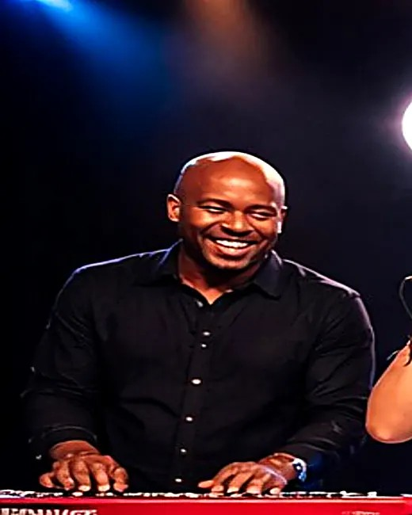
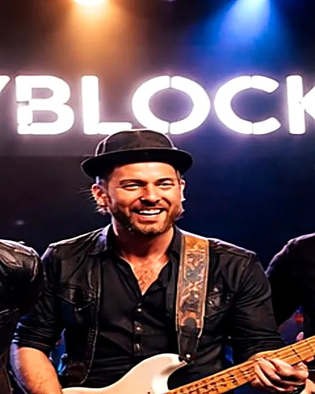
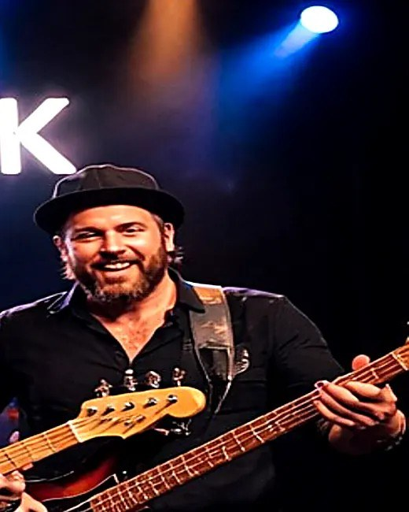

About Us

Keys - Marcus "Keys" Lane (with OneCityBlock 3 years)
Marcus studied music production and jazz piano, but fell in love with pop/rock gigs because the energy is unbeatable. In OneCityBlock he builds the big synth textures, handles intros/outros so songs flow smoothly, and adds harmony vocals that thicken the choruses.
Lead Vocals - Emma Rivers (with OneCityBlock 2 years)
Emma grew up singing in school shows and local acoustic nights before jumping into full-band performances. She's the crowd-connection specialist—big choruses, clean runs, and the kind of stage presence that keeps everyone singing along.
Lead Singer / MC - Evan Cole (with OneCityBlock 4 years)
Evan started performing in small cover bands in high school and never stopped—he loves reading the room and choosing the right song at the right time. In OneCityBlock he leads vocals, handles announcements, and keeps the set moving with smooth transitions and high energy.
Guitar - Nate "Riff" Bennett (with OneCityBlock 5 years)
Nate learned guitar by obsessing over classic rock riffs and then expanded into modern pop tones and tight rhythm playing. He's the “hook guy” in the band—nailing iconic intros, adding solos when they fit, and locking in with the rhythm section to keep the groove punchy.


Bass - Sam Ortega (with OneCityBlock 3 years)
Sam got his start playing bass in friends' garage bands and later played in a college funk group that taught him how to stay locked-in and danceable. In OneCityBlock he's the foundation—tight timing, big low-end, and the steady pocket that keeps the dance floor moving all night.